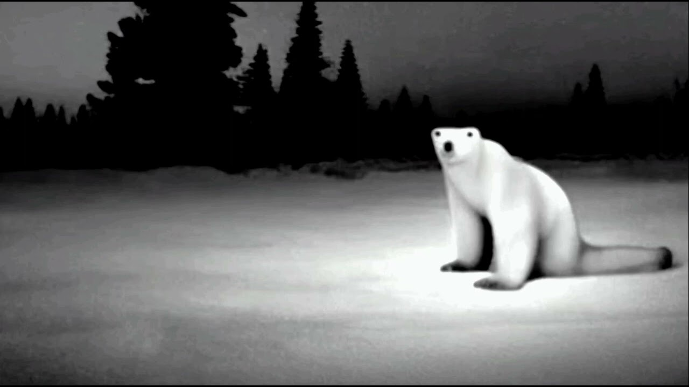

Все говорят о меме из 2026 года, я вам сейчас расскажу что это за мем такой
«Это ноябрьский мем из 2026, вы пока не поймете». В соцсетях завирусилась новая крипипаста с безобидным на первый взгляд медведем. Чем дольше смотришь на ролик, тем более жутким он становится. Короткое видео состоит только из одной картинки медведя на фоне северного сияния и грустной музыки. У животного необычное лицо, а его задние лапы неестественно изогнуты назад. По мотивам оригинального ролика начали создавать ужастики. Пользователи накладывают жуткую музыку и добавляют различные эффекты, деформирующие картинку. В одном клипе милый медведь и вовсе превращается в монстра с длинными клыками. А в другом — встает на задние лапы. Откуда взялся оригинальный ролик? Никто точно не знает. Но сами видео не новые — впервые они появились еще полгода назад.